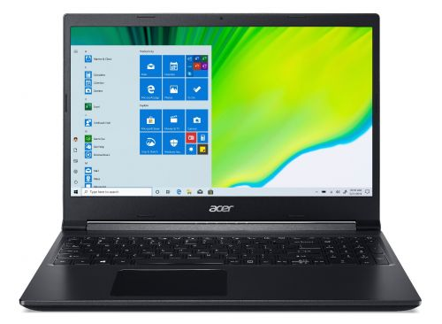

Acer Aspire 7
Technical Specs
Processor : 9th Gen Intel i5
Screen Size : 15.6 inch
True Tone : No
Storage : 256GB SSD+1TB HDD/ 512GB SSD
Graphics : Nvidia GTX 1650 / Nvidia GTX 1650 Ti
RAM : 8GB/ 16GB
Keyboard : Keyboard with White backlight
Ports : 1 HDMI, 1 Charging Port, 3 USB, 1 USB-C, SD Card Slot
Review
Acer Aspire 7 is a newly launched entry level gaming laptop by Acer. Acer has been a well known laptop and computers brand for a while now. But their Predator series of laptops are more inclined to Pure Gaming Experience, but they do have an additional cost. Still, Acer has the Nitro series and Triton series laptops for gaming as well. The latest addition to the gaming series is the Aspire 7. The Aspire 7 is an average looking yet sturdy and simple laptop with good performance for entry level gaming. Spec wise the device has intrl's 9th Generation i5 processor for now, even though the 10th Generation chips are already available. Still the 9th generation chips are no different than the latest ones. The graphics department is not so strong either with the Nvidia GTX 1650 and GTX 1650 Ti options, the laptop will be sure an entry level device for students or other professionals. The main selling point of this laptop is its price tag. The Acer Aspire 7 has to be the cheapest Intel+ Nvidia based gaming laptop out there being under $600. The laptop certainly would be a hit in emerging markets with this price tag. All in all, the Acer Aspire 7 is good option for people who are looking for a regular day-to-day laptop or a simple gaming laptop within the budget. Check out the Acer Aspire 7 in the link below.
Amazon Link: View